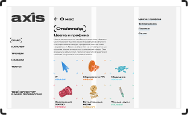
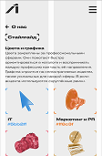

О нас
О нас Стайлгад
Цвета и графика
Цвета закреплены за профессиональными сферами. Они помогают быстро ориентироваться в каталоге и воспринимать каждую профессию как часть её направления.

IT
#5bb2ff
Маркетинг и PR
#ff8c3f
Медицина
#80eaff
Креативный
сектор
#ff768d
Естественные
науки
#e6bb77
Точные науки
#80ddbf
Финансы
#ffcd55
Строительство
#c2d3e5
Образование
#f18e6dЭкология
#9cd75dТипографика
Заголовки и подзаголовки
Druk Wide
- H1: 30px
- H2: 25px
- H3: 18px
- H4: 16px
Аа Бб Вв Гг Дд Ее Ёё Жж
Зз Ии Йй Кк Лл Мм Нн
Оо Пп Рр Сс Тт Уу Фф
Хх Цц Чч Шш Щщ Ъъ Ыы
Ьь Ээ Юю Яя
Наборный текст
Akzidenz-Grotesk Pro
Аа Бб Вв Гг Дд Ее Ёё Жж Зз
Ии Йй Кк Лл Мм Нн Оо Пп
Рр Сс Тт Уу Фф Хх Цц Чч Шш
Щщ Ъъ Ыы Ьь Ээ Юю Яя
Логотип
Логотип отражает идею ориентира в мире профессий. Имеет текстовый и графический варианты.
Полный текстовый

Краткий графический

Сетка
Desktop

Mobile
